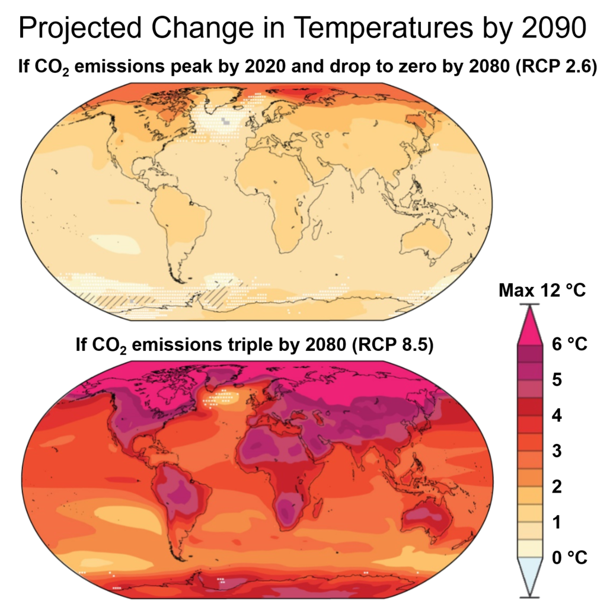

Projections
A climate model is a representation of the physical, chemical, and biological processes that affect the climate system. Computer models are run on supercomputers to reproduce and predict the circulation of the oceans, the annual cycle of the seasons, and the flows of carbon between the land surface and the atmosphere. There are more than two dozen scientific institutions that develop climate models. Models not only project different future temperature with different emissions of greenhouse gases, but also do not fully agree on the strength of different feedbacks on climate sensitivity and the amount of inertia of the system. A subset of climate models add societal factors to a simple physical climate model. These models simulate how population, economic growth, and energy use affect – and interact with – the physical climate. With this information, scientists can produce scenarios of how greenhouse gas emissions may vary in the future. Scientists can then run these scenarios through physical climate models to generate climate change projections.
Climate models include different external forcings for their models. For different greenhouse gas inputs four RCPs (Representative Concentration Pathways) are used: "a stringent mitigation scenario (RCP2.6), two intermediate scenarios (RCP4.5 and RCP6.0) and one scenario with very high GHG [greenhouse gas] emissions (RCP8.5)". Models also include changes in the Earth's orbit, historical changes in the Sun's activity, and volcanic forcing. RCPs only look at concentrations of greenhouse gases, factoring out uncertainty as to whether the carbon cycle will continue to remove about half of the carbon dioxide from the atmosphere each year. The physical realism of models is tested by examining their ability to simulate contemporary or past climates. Past models have underestimated the rate of Arctic shrinkage and underestimated the rate of precipitation increase. Sea level rise since 1990 was underestimated in older models, but now agrees well with observations. The 2017 United States-published National Climate Assessment notes that "climate models may still be underestimating or missing relevant feedback processes".